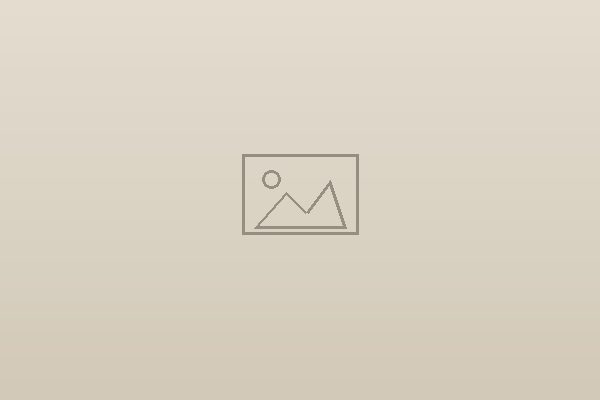

Rinkesh Gorasia
roll me⚄
Six sides. Roll to meet one.
The work.
Two companies I founded, two years backing founders, and what I’m building now. One sold, one I shut down myself — here’s both, honestly.
Savior
2017–2020Acquired by Zocdoc
Built and bootstrapped a hospital-management platform for tier-1 hospitals in India — scaled it to 85 hospitals, hit profitability, and got acquired by Zocdoc in 2020.
- Started out building an appointment-booking system. Spent time inside hospitals watching how the staff actually worked, and saw the real problem was messy offline data across the whole workflow — so I pivoted to software that ran the entire hospital operation.
- Built the MVP in 3 months and landed 2 hospital pilots. Designed workflows that cut patient-processing time and killed manual errors — the key was solving a painful daily problem, not a nice-to-have.
- Scaled to 35 hospitals in year one by going after chains like Fortis and Cloudnine for multi-location rollouts. 85 by year 3. No sales team — all of it word of mouth and referrals.
- Shipped v2.0 with patient-history analytics and decision-support, so doctors could make treatment calls with real data behind them. Built a team of 85 across engineering, operations and customer success.
- Hit profitability through subscriptions and premium tiers, bootstrapped the whole way. Zocdoc acquired us in March 2020 for their US expansion.
85 hospitals₹0 raisedProfitable, bootstrappedAcquired by Zocdoc, 2020

Career Leap
2020–2023Shut down, my call
A community-first learning platform for tech professionals to build the soft skills that matter — from people who’d actually done it.
- Started as a WhatsApp community and grew to 10k users in 6 months. Built a mobile learning app that hit 100k+ watch hours. The community grew from 2k to 3,500+ through weekly sessions with industry leaders.
- Pivoted from the app to live cohorts once I talked to users and saw where the real opportunity was. Ran 2 cohorts with a 3-person team — trained 60 professionals, made ₹15L at ₹10–15k. Got 40% completion, way above the usual 5–10% for online courses.
- Added gamification that pushed session times up 50% and doubled retention. Also tested a B2B model — ran training programs inside 2 companies.
- Shut it down in 2023, when the unit economics didn’t work at scale.
10K users100K watch hours40% completion₹15L revenue
Play StoreA
Accel Atoms
2023–2025
Two years on the other side of the table, running Accel’s pre-seed program for 0→1 founders.
- Ran it end to end — picked the founders, built the program across 4 cohorts and 2 tracks, and sat with each team from rough idea to first cheque.
- It taught me to read the early signal fast: the teams that worked got inside their problem the way I once tried to get inside hospitals.
4 cohorts40+ founders backed2 tracks (AI, LeapTech)
Building nowback to shipping · in the open, mostly with AI


The short version
One exit, one shutdown I owned, and back to building.
If you’re hiring for a 0→1 role, the easiest start is a quick conversation.